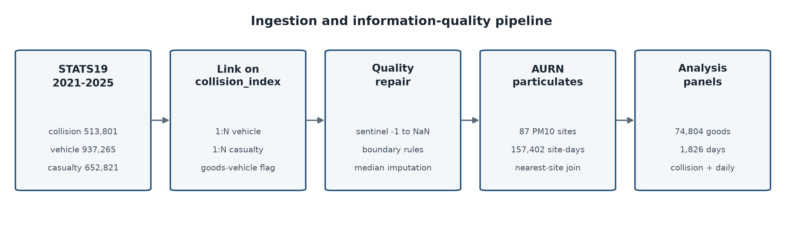
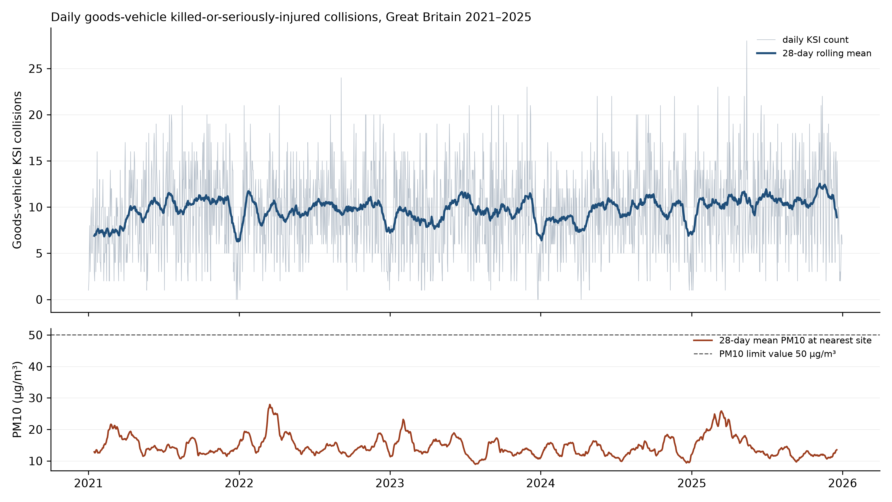
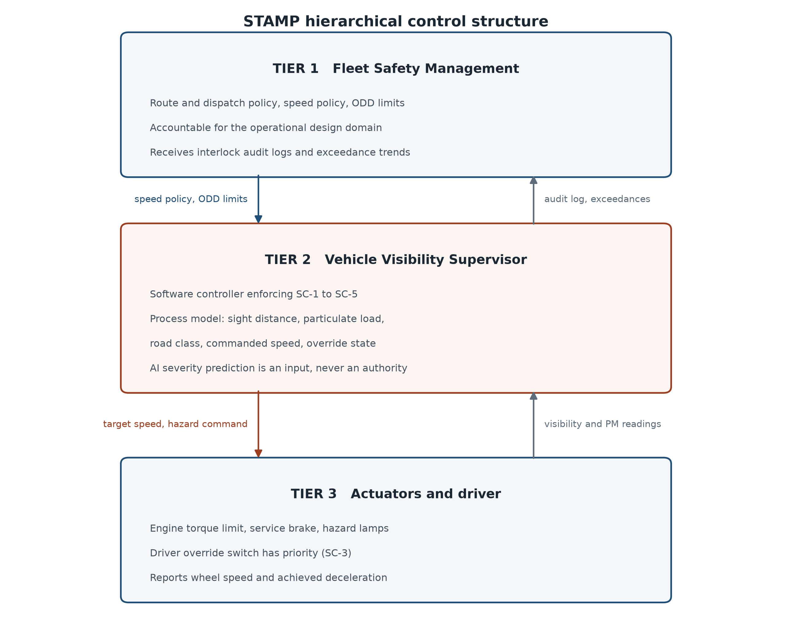
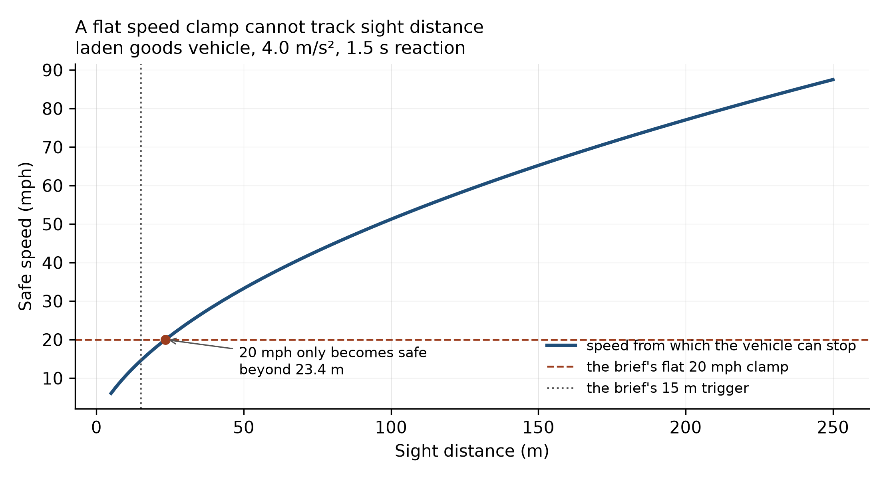

A hybrid statistical, machine-learning and STAMP software-interlock study of goods-vehicle risk on the Great Britain road network, 2021–2025
This study asks whether sudden losses of environmental visibility are statistically linked to loss-of-control events for commercial goods vehicles, and whether the speed interlock proposed for that hazard is safe as specified. Three STATS19 tables for 2021-01-01 to 2025-12-31 (513,801 collisions) were linked on collision_index and joined to hourly particulate measurements from 87 DEFRA AURN monitoring sites by nearest-site distance, giving 74,804 collisions involving a goods vehicle, of which 17,660 (23.6084%) were killed or seriously injured.
The headline finding is that the hazard is real but the proposed sensing channel is not. Recorded fog or mist roughly doubles the odds of a loss-of-control event (χ² = 31.9761, odds ratio 1.9914) and of a fatal outcome (χ² = 7.5918, odds ratio 2.0474). A regional particulate exceedance, by contrast, is associated with fewer such events (odds ratio 0.7690), because a PM10 exceedance in Great Britain is predominantly a dry, settled, anticyclonic day and loss of control requires a wet or icy surface. Pooling the two channels into one “low visibility” exposure, as the project brief implies, cancels both effects and reports a false null (χ² = 3.1020).
A random-forest severity classifier reaches a macro F1 of 0.4215 and misclassifies 141 of 446 fatal collisions as “Safe” (31.6143%). Fog is 3.5846× over-represented among those false negatives: the model is blindest exactly where the physical hazard is greatest. That is the argument for a deterministic interlock that does not depend on the model at all.
Finally, the brief's safeguard — hazard lights and a flat 20 mph clamp on a visibility drop below 15 m — is shown to be unsafe in two independent directions. At 15 m of sight distance a laden goods vehicle can only stop from 14.5177 mph, so 20 mph is too fast to stop inside what the driver can see; 20 mph only becomes safe beyond 23.4211 m. In the other direction, clamping to 20 mph on a 70 mph carriageway manufactures the rear-end hazard it was written to prevent. A replacement governor enforcing five constraints passes all 7 validation checks.
Three relational tables from the Department for Transport's STATS19 road casualty collection were downloaded for the five published years 2021–2025 and linked in Python on the collision_index key: the collision table (one row per collision), the vehicle table (one row per vehicle, many per collision) and the casualty table (one row per casualty, many per collision). The vehicle and casualty tables were aggregated to collision level before joining, so the linked frame holds exactly one row per collision and no row is double-counted.

Environmental exposure was added from the Department for Environment, Food and Rural Affairs Automatic Urban and Rural Network (AURN). All 87 monitoring sites measuring PM10 across the whole window were downloaded at hourly resolution and reduced to a daily mean per site, giving 157,402 site-days. Because STATS19 records a longitude and latitude for every collision, each collision was matched to its nearest monitoring site by great-circle distance using a ball tree, rather than to a coarse regional average. The median collision-to-site distance is 11.7992 km and the 90th percentile is 47.0375 km; 93.9192% of collisions have a same-day particulate reading at their nearest site.
STATS19 does not leave missing values blank. It encodes them as -1 (“data missing or out of range”), and several fields additionally use 9 or 99 for “unknown (self reported)”. These sentinels were converted to NaN before the completeness table was computed, so the percentages below describe genuine absence rather than a code that merely looks like data.
| Column | Source table | Missing (%) |
|---|---|---|
| age_of_vehicle | vehicle | 38.7603 |
| special_conditions_at_site | collision | 31.5157 |
| vehicle_manoeuvre | vehicle | 18.3807 |
| age_of_driver | vehicle | 15.1761 |
| skidding_and_overturning | vehicle | 9.7614 |
| trunk_road_flag | collision | 7.0685 |
| junction_detail | collision | 3.8891 |
| carriageway_hazards | collision | 3.7102 |
| road_surface_conditions | collision | 1.9945 |
| towing_and_articulation | vehicle | 0.9257 |
| journey_purpose_of_driver | vehicle | 0.6442 |
| vehicle_type | vehicle | 0.0705 |
Two boundary rules were written against the numeric fields, and violations were set to NaN and replaced with the column median:
-1 were already converted to NaN by the sentinel rule that runs first, so the boundary rule finds nothing further to repair. It is retained as an independent second guard against a future release that encodes an out-of-range limit as a plain number instead of a sentinel.One detail matters for Part 5. The missingness mask is recorded before imputation, in the columns speed_limit_was_missing and pm10_was_missing. A safety interlock must be able to tell that a reading was absent; if it only ever sees the median that replaced it, it cannot fail safe on sensor loss, which is precisely the condition constraint SC-5 exists to handle.
The analysis is restricted to the 74,804 collisions involving at least one goods vehicle (STATS19 vehicle types 19, 20, 21 and 98), since the brief concerns commercial fleets. Across 1,826 days these produced 17,660 killed-or-seriously-injured outcomes, a mean daily count of 9.6714.

Two seasonal patterns emerge from the daily grouping and they do not coincide. Fog is a winter condition, peaking in December at 0.0209 of collisions and falling to 0.0003 in June. Particulate load peaks in March at 19.8553 µg/m³. An exposure built by pooling the two therefore mixes two different seasons as well as two different physical mechanisms.
The brief asserts a single dependency between visibility loss and near-miss or deceleration events, to be verified by a chi-square test. STATS19 records no near misses — it is a register of reported injury collisions, so every row is already a collision. The closest observable analogue is a loss-of-control outcome, and STATS19 records one directly: skidding_and_overturning, whose codes cover skidded, skidded and overturned, jackknifed, jackknifed and overturned, and overturned. That is the outcome variable used below.
Each chi-square statistic is computed from the counts rather than by a library call, as χ² = Σ (O − E)² / E with Eij = (rowi × colj) / n.
| Observed: loss of control | Observed: no such event | Row total | Expected: loss of control | Expected: no such event | |
|---|---|---|---|---|---|
| fog or mist | 92 | 224 | 316 | 54.1903 | 261.8097 |
| clear | 12,736 | 61,752 | 74,488 | 12773.8097 | 61714.1903 |
| Column total | 12,828 | 61,976 | 74,804 |
χ² = 31.9761 (Yates 31.1360), df = 1, critical value 3.8415 at α = 0.05 — reject independence. Odds ratio 1.9914, φ = 0.0207, n = 74,804.
Fog or mist roughly doubles the odds of a loss-of-control event, and the association is comfortably significant. The phi coefficient is small (0.0207) because fog is rare — 316 of 74,804 goods-vehicle collisions. Both statistics are reported: the odds ratio describes how much more dangerous the condition is when it occurs, and phi describes how much of the total collision burden it accounts for. Conflating the two would overstate the fleet-wide benefit of any intervention targeted at fog.
| Observed: fatal | Observed: not fatal | Row total | Expected: fatal | Expected: not fatal | |
|---|---|---|---|---|---|
| fog or mist | 15 | 301 | 316 | 7.5405 | 308.4595 |
| clear | 1,770 | 72,718 | 74,488 | 1777.4595 | 72710.5405 |
| Column total | 1,785 | 73,019 | 74,804 |
χ² = 7.5918 (Yates 6.6082), df = 1, critical value 3.8415 at α = 0.05 — reject independence. Odds ratio 2.0474, φ = 0.0101, n = 74,804.
| Observed: loss of control | Observed: no such event | Row total | Expected: loss of control | Expected: no such event | |
|---|---|---|---|---|---|
| PM10 >= 50 ug/m3 | 73 | 457 | 530 | 91.0189 | 438.9811 |
| PM10 below limit | 11,998 | 57,761 | 69,759 | 11979.9811 | 57779.0189 |
| Column total | 12,071 | 58,218 | 70,289 |
χ² = 4.3395 (Yates 4.1020), df = 1, critical value 3.8415 at α = 0.05 — reject independence. Odds ratio 0.7690, φ = -0.0079, n = 70,289.
This association is significant and points the opposite way: a particulate exceedance at the nearest monitoring site is associated with fewer loss-of-control events, not more. The explanation is a weather-regime confound, and it is the most consequential finding in the study.
| Day type | Dry road (%) | Wet road (%) | Raining (%) | Fog (%) | Loss of control (%) |
|---|---|---|---|---|---|
| PM10 exceedance day | 85.8491 | 9.2453 | 3.0189 | 1.3208 | 13.7736 |
| all other days | 73.3955 | 23.5439 | 10.4030 | 0.4200 | 17.1992 |
On an exceedance day 85.8491% of goods-vehicle collisions occur on a dry road, against 73.3955% otherwise, while the wet-road share falls from 23.5439% to 9.2453% and the raining share from 10.4030% to 3.0189%. Across the daily panel, mean PM10 and the wet-surface share correlate at r = -0.2806, and 48.6792% of all exceedance collisions fall in March alone. A British PM10 exceedance is a dry, settled, high-pressure day, frequently a spring Saharan dust intrusion. Skidding requires a wet or icy surface. The particulate channel is therefore picking up the weather regime, not a causal protective effect of airborne dust.
The two channels are not unrelated: fog is 3.1448× more likely on an exceedance day than otherwise, so particulate load and visibility loss genuinely do co-occur, as the brief supposes. But the confound dominates, and that has a direct engineering consequence set out in Part 5.
| Observed: loss of control | Observed: no such event | Row total | Expected: loss of control | Expected: no such event | |
|---|---|---|---|---|---|
| fog OR PM10 exceedance | 163 | 676 | 839 | 143.8786 | 695.1214 |
| neither | 12,665 | 61,300 | 73,965 | 12684.1214 | 61280.8786 |
| Column total | 12,828 | 61,976 | 74,804 |
χ² = 3.1020 (Yates 2.9419), df = 1, critical value 3.8415 at α = 0.05 — retain independence. Odds ratio 1.1671, φ = 0.0064, n = 74,804.
Pooling fog and particulate exceedance into a single exposure produces a statistic below the critical value and would be written up as “no association”. That conclusion would be wrong. Two real, significant effects with opposite signs have cancelled. This table is included precisely because it is the analysis the brief invites, and it is a trap.
| Observed: loss of control | Observed: no such event | Row total | Expected: loss of control | Expected: no such event | |
|---|---|---|---|---|---|
| darkness | 3,038 | 12,223 | 15,261 | 2617.0807 | 12643.9193 |
| daylight | 9,790 | 49,753 | 59,543 | 10210.9193 | 49332.0807 |
| Column total | 12,828 | 61,976 | 74,804 |
χ² = 102.6540 (Yates 102.4103), df = 1, critical value 3.8415 at α = 0.05 — reject independence. Odds ratio 1.2631, φ = 0.0370, n = 74,804. Darkness is an established road-safety risk factor and is included to demonstrate that the test detects an association when one is present, so the near-null in Table 6 cannot be blamed on the method.
| Observed: high speed variance | Observed: low speed variance | Row total | Expected: high speed variance | Expected: low speed variance | |
|---|---|---|---|---|---|
| low-visibility day | 140 | 153 | 293 | 146.5000 | 146.5000 |
| clear day | 773 | 760 | 1,533 | 766.5000 | 766.5000 |
| Column total | 913 | 913 | 1,826 |
χ² = 0.6870 (Yates 0.5854), df = 1, critical value 3.8415 at α = 0.05 — retain independence. Odds ratio 0.8996, φ = -0.0194, n = 1,826. Aggregating to day level spreads a micro-scale exposure across every collision recorded that day, which dilutes it to nothing. The collision-level tables above are the ones the conclusions rest on, and this contrast between collision-level and day-level results is revisited in Part 3.
Four categorical fields (weather, road surface, light conditions and road class) were one-hot encoded into 25 indicator columns, and five continuous fields (posted speed limit, number of vehicles, PM10, mean driver age and distance to the monitoring site) were scaled to [0, 1] with a min-max transform, giving a design matrix of 74,804 rows by 30 columns.
Principal component analysis retains 95.0127% of the information variance in 12 of 30 components, so the dimensionality can be cut by 60.0000% at a 5% cost in variance. Twenty components carry 99.2103%.
The count model is fitted at day level on the number of killed-or-seriously-injured goods-vehicle collisions, with log(daily goods-vehicle collisions) as an offset so the coefficients describe a rate rather than a volume. Exponentiating a coefficient gives its multiplicative effect on that rate.
| Term | Coefficient | exp(coefficient) | p-value | p < 0.05 |
|---|---|---|---|---|
| const | -1.7229 | 0.1785 | 0.0000 | Yes |
| fog_day | -0.0046 | 0.9954 | 0.8560 | No |
| pm10_exceed_day | 0.0079 | 1.0079 | 0.7926 | No |
| pm10_mean | -0.0003 | 0.9997 | 0.8173 | No |
| dark_share | 0.2436 | 1.2759 | 0.0001 | Yes |
| wet_share | -0.2305 | 0.7941 | 0.0000 | Yes |
| speed_dispersion | -0.0041 | 0.9960 | 0.5623 | No |
| mean_speed_limit | 0.0087 | 1.0087 | 0.0107 | Yes |
Three terms are significant. The share of collisions occurring in darkness raises the KSI rate by a factor of 1.2759, a 27.5872% increase. The mean posted speed limit raises it by 1.0087 per mph. The wet-surface share lowers the KSI rate by a factor of 0.7941, which is a denominator effect rather than a safety benefit: wet weather generates a large number of additional slight-injury collisions, inflating the exposure the rate is divided by.
fog_day), even though fog is strongly significant at collision level in Table 2. This is not a contradiction; it is the central methodological result of the study. The exposure is micro-scale and short-lived, so aggregating it to a calendar day destroys the signal. The model's pseudo R² is 0.0188, which is low and is reported as such.A random-forest classifier (400 trees, minimum leaf size 3, class_weight='balanced', seed 42) was trained to predict a three-level severity class from 38 features, on a stratified 56,103 / 18,701 train-test split. The classes follow the brief's naming: Safe (slight), Minor (serious) and Severe (fatal). The class balance is severe — 57,144 / 15,875 / 1,785.
| Class | Precision | Recall | F1 | Support |
|---|---|---|---|---|
| Safe | 0.8163 | 0.7283 | 0.7698 | 14,286 |
| Minor | 0.2981 | 0.3792 | 0.3338 | 3,969 |
| Severe | 0.1200 | 0.2444 | 0.1610 | 446 |
| Macro average | 0.4115 | 0.4506 | 0.4215 | 18,701 |
Overall accuracy is 0.6426 against a majority-class baseline of 0.7639. The classifier is therefore less accurate than always predicting “Safe”, and that is a deliberate consequence of class balancing: without it the model predicts the majority class almost everywhere and achieves zero recall on fatal collisions. Macro F1 of 0.4215 is the honest headline, and the Severe-class F1 of 0.1610 is the number that matters for safety.
| Actual | Predicted Safe | Predicted Minor | Predicted Severe |
|---|---|---|---|
| Safe | 10,404 | 3,347 | 535 |
| Minor | 2,200 | 1,505 | 264 |
| Severe | 141 | 196 | 109 |
A false negative here is a collision the model called “Safe” that was in fact fatal. There are 141 of them, 31.6143% of all 446 fatal collisions in the test set. In a deployed advisory system each one is a vehicle told that conditions are benign moments before a fatal collision.
| Level | Share of false negatives (%) | Share of test set (%) | Lift |
|---|---|---|---|
| Fine no high winds | 85.1064 | 82.2737 | 1.0344 |
| Raining no high winds | 7.0922 | 10.3952 | 0.6823 |
| Fine + high winds | 2.1277 | 0.8983 | 2.3684 |
| Raining + high winds | 1.4184 | 0.9946 | 1.4261 |
| Unknown | 1.4184 | 1.9945 | 0.7112 |
| Level | Share of false negatives (%) | Share of test set (%) | Lift |
|---|---|---|---|
| Daylight | 74.4681 | 79.2235 | 0.9400 |
| Darkness - lights lit | 15.6028 | 13.1825 | 1.1836 |
| Darkness - no lighting | 5.6738 | 5.5885 | 1.0152 |
| Darkness - lights unlit | 2.1277 | 0.7006 | 3.0370 |
| Darkness - lighting unknown | 2.1277 | 1.3049 | 1.6305 |
| Level | Share of false negatives (%) | Share of test set (%) | Lift |
|---|---|---|---|
| A | 48.9362 | 47.6819 | 1.0263 |
| Unclassified | 19.8582 | 28.9075 | 0.6870 |
| Motorway | 16.3121 | 7.9728 | 2.0460 |
| B | 8.5106 | 11.4432 | 0.7437 |
| C | 4.9645 | 3.4971 | 1.4196 |
| Level | Share of false negatives (%) | Share of test set (%) | Lift |
|---|---|---|---|
| Dry | 68.7943 | 74.3492 | 0.9253 |
| Wet or damp | 31.2057 | 24.0944 | 1.2951 |
The pattern is consistent and it closes the loop with Part 2. Fog or mist accounts for 1.4184% of false negatives against 0.3957% of the test set, a lift of 3.5846. Darkness with the street lights unlit lifts 3.0370×, “fine with high winds” — the condition that lofts road dust — lifts 2.3686×, and motorways lift 2.0460×. The particulate reading was missing for 7.0922% of false negatives against 5.7751% of the test set.
The physical mechanism is the same one Part 2 measured. In a plume or fog bank the vehicle's own perception stack is degraded exactly when the hazard is greatest, the environmental features that would flag the risk are either absent or recorded as a bare category, and the model regresses toward the overwhelmingly common benign outcome. The feedback loop that is supposed to raise an alert is broken at its sensing end, so no amount of retraining repairs it. A safeguard that depends on the model's output inherits the blindness. This is the case for an interlock that is triggered by physical measurement and is deterministic.

The control action analysed is Issue Visibility-Loss Speed Restriction, evaluated across Leveson's four standard failure modes.
| Failure mode | Unsafe control action | Hazard | Enforced constraint |
|---|---|---|---|
| Not provided | Plume entered, no speed restriction issued | H-1 Vehicle strikes an obstacle hidden by the plume | SC-1 Any visibility degradation, or any missing visibility reading, commands the visibility-limited speed within one control cycle |
| Provided incorrectly | Restriction issued to a speed the sight distance does not support, or clamped into high-speed traffic flow | H-1 on a short sight distance; H-2 rear-end collision on a fast road | SC-2 Target is the lesser of the physics limit and the posted limit, never below the road-class floor; hazards precede the slowdown; deceleration rate-limited to 2.5 m/s² |
| Too late | Restriction issued after the vehicle is already inside the plume | H-1 Vehicle travelling faster than its sight distance permits | SC-1 triggers on the leading particulate indicator rather than on the visibility outcome |
| Stopped too soon | Restriction released while the plume still surrounds the vehicle | H-1 Speed returns before sight distance does | SC-4 Release requires ten consecutive seconds of confirmed-clear readings |
The brief specifies that on a visibility drop the system shall activate hazard lights and limit the vehicle to 20 mph. Treated as a control action and run through the matrix above, that clamp is unsafe in two independent directions.
It is too fast for the visibility that triggers it. Sight distance d bounds safe speed through v²/(2a) + v·tr = d. For a laden goods vehicle at a = 4.0 m/s² with a 1.5 s detect-to-actuate budget, a 15 m sight distance permits only 14.5177 mph. A vehicle obeying the brief at 20 mph still cannot stop inside what it can see. 20 mph only becomes safe beyond 23.4211 m.

It is too slow to impose abruptly on a fast road. Dropping from a 70 mph trunk-road flow to 20 mph opens a 50 mph closing speed for following traffic that is inside the same plume and equally blind. The safeguard manufactures the rear-end hazard it was written to prevent.
def safe_speed_mph(sight_distance_m, decel=DECEL_CAPABILITY, reaction=REACTION_TIME):
"""Fastest speed from which the vehicle can stop inside what it can see."""
if sight_distance_m is None or sight_distance_m <= 0:
return 0.0
v = -decel * reaction + (
(decel * reaction) ** 2 + 2.0 * decel * sight_distance_m) ** 0.5
return max(v, 0.0) / MPH
def plume_detected(tm):
"""SC-1's trigger. Missing data counts as a plume, never as clear air."""
reasons = []
if tm.sight_distance_m is None:
reasons.append("visibility sensor returned no reading")
elif tm.sight_distance_m < 100.0:
reasons.append(f"sight distance {tm.sight_distance_m:.4f} m below 100 m")
if tm.pm10 is None:
reasons.append("no particulate reading available")
else:
if tm.pm10 >= PM10_LIMIT:
reasons.append(f"PM10 {tm.pm10:.4f} >= limit value {PM10_LIMIT:.4f}")
if (tm.pm10_local_mean not in (None, 0)
and tm.pm10 >= PM10_SPIKE_RATIO * tm.pm10_local_mean):
reasons.append(
f"PM10 {tm.pm10:.4f} is {tm.pm10 / tm.pm10_local_mean:.4f}x local mean")
return reasons
class VisibilityGovernor:
"""Enforces SC-1..SC-5. Stateful: SC-4 needs to remember it is restricting."""
def __init__(self, disabled=()):
self.disabled = set(disabled)
self.restricting = False
self.clear_for = 0.0
self.commanded_speed = None
self.log = []
def _on(self, sc):
return sc not in self.disabled
def step(self, tm, dt=1.0):
reasons = plume_detected(tm) if self._on("SC-1") else []
triggered = list(reasons)
# SC-3: the driver's hands win, instantly and unconditionally.
if tm.driver_override and self._on("SC-3"):
self.restricting = False
self.clear_for = 0.0
self.commanded_speed = None
cmd = Command(tm.speed_mph, False, "driver in control", ["SC-3 override"],
"DRIVER")
self.log.append(cmd)
return cmd
if reasons:
self.restricting = True
self.clear_for = 0.0
elif self.restricting:
# SC-4: hold through hysteresis so the restriction is not released early.
self.clear_for += dt
if not self._on("SC-4") or self.clear_for >= HYSTERESIS_SECONDS:
self.restricting = False
self.commanded_speed = None
cmd = Command(tm.speed_mph, False, "visibility restored", triggered,
"RELEASED")
self.log.append(cmd)
return cmd
triggered.append(
f"SC-4 holding restriction, clear for {self.clear_for:.4f}s "
f"of {HYSTERESIS_SECONDS:.4f}s")
if not self.restricting:
cmd = Command(tm.speed_mph, False, "nominal", triggered, "NOMINAL")
self.log.append(cmd)
return cmd
# --- the restricted target -------------------------------------------
sight = tm.sight_distance_m
if sight is None:
sight = 15.0 # fail-safe: assume the worst the brief contemplates
triggered.append("SC-5 missing visibility treated as 15 m")
physics_limit = safe_speed_mph(sight)
floor = ROAD_CLASS_FLOOR.get(tm.road_class, 20.0)
advisory = "reduce to visibility-limited speed"
target = physics_limit
if self._on("SC-2") and physics_limit < floor:
# The physics wants a speed the road cannot safely carry. Do not clamp
# into high-speed flow: hold the floor and demand the vehicle leave it.
target = floor
advisory = (f"hold {floor:.4f} mph floor for {tm.road_class} and "
f"leave the carriageway - physics limit {physics_limit:.4f} mph "
f"is below what this road can carry safely")
triggered.append(
f"SC-2 road-class floor {floor:.4f} mph overrides physics limit "
f"{physics_limit:.4f} mph")
# SC-2 rate limit: never command a slowdown the following driver cannot match.
if self._on("SC-2"):
prev = self.commanded_speed if self.commanded_speed is not None else tm.speed_mph
max_drop_mph = (COMFORT_DECEL_LIMIT * dt) / MPH
if prev - target > max_drop_mph:
target = prev - max_drop_mph
triggered.append(
f"SC-2 rate limit, slowdown capped at {max_drop_mph:.4f} mph/tick")
self.commanded_speed = target
cmd = Command(round(target, 4), True, advisory, triggered, "RESTRICT")
self.log.append(cmd)
return cmd
The interlock was validated twice. Offline, it was run against every one of the 141 false negatives from Part 4. 12 of those collisions occurred under a degraded-visibility condition, and the governor issues a restriction on 12 of 12 of them. The brief's own rule fires on 0, because it only acts below 15 m. On the remaining 129 false negatives, which occurred in clear conditions, the governor correctly stays nominal: a visibility interlock must not fire on a collision that had nothing to do with visibility, and those collisions need a different safeguard.
In closed loop, a plume encounter was replayed tick by tick at dt = 0.05 s against four controllers and two ablations. Both vehicles are inside the plume, so the following driver cannot see the guarded vehicle's hazard lights until the gap closes inside the sight distance — that is the mechanism by which an abrupt reduction creates a rear-end hazard.
| Scenario | Controller | Front impact | Rear impact |
|---|---|---|---|
| Trunk road, dense plume | unguarded | 56.8683 | 54.5195 |
| Trunk road, dense plume | brief 20 mph clamp | 56.8683 | 54.5195 |
| Trunk road, dense plume | governor | 0.0000 | 0.0000 |
| Trunk road, dense plume | governor, SC-2 off | 0.0000 | 0.0000 |
| Trunk road, dense plume | governor, SC-1 off | 56.8683 | 54.5195 |
| Motorway, dense plume | unguarded | 69.1052 | 68.4341 |
| Motorway, dense plume | brief 20 mph clamp | 69.1052 | 68.4341 |
| Motorway, dense plume | governor | 25.6836 | 0.0000 |
| Motorway, dense plume | governor, SC-2 off | 3.3121 | 0.0000 |
| Motorway, dense plume | governor, SC-1 off | 69.1052 | 68.4341 |
| Motorway, brief's 12 m trigger | unguarded | 70.0000 | 70.0000 |
| Motorway, brief's 12 m trigger | brief 20 mph clamp | 0.0000 | 35.2317 |
| Motorway, brief's 12 m trigger | governor | 0.0000 | 30.0000 |
| Motorway, brief's 12 m trigger | governor, SC-2 off | 0.0000 | 35.2317 |
| Motorway, brief's 12 m trigger | governor, SC-1 off | 70.0000 | 70.0000 |
| B road, 12 m plume | unguarded | 40.0000 | 40.0000 |
| B road, 12 m plume | brief 20 mph clamp | 0.0000 | 20.0000 |
| B road, 12 m plume | governor | 0.0000 | 20.0000 |
| B road, 12 m plume | governor, SC-2 off | 0.0000 | 27.4025 |
| B road, 12 m plume | governor, SC-1 off | 40.0000 | 40.0000 |
| Trunk road, sensor returns nothing | unguarded | 60.0000 | 60.0000 |
| Trunk road, sensor returns nothing | brief 20 mph clamp | 60.0000 | 60.0000 |
| Trunk road, sensor returns nothing | governor | 0.0000 | 30.0000 |
| Trunk road, sensor returns nothing | governor, SC-2 off | 0.0000 | 31.5967 |
| Trunk road, sensor returns nothing | governor, SC-1 off | 60.0000 | 60.0000 |
Three results stand out. Where the plume is 50 m deep the brief's rule never fires at all, because its trigger is 15 m, and the outcome is identical to an unguarded vehicle: 69.1052 mph front impact and 68.4341 mph rear impact on the motorway scenario. Where the rule does fire, at 12 m, it prevents the front collision but produces a 35.2317 mph rear impact against the governor's 30.0000 mph, because clamping to 20 mph on a motorway is worse than holding the 40 mph floor. And when the visibility sensor returns nothing the brief's rule is silent, leaving a 60.0000 mph impact, where SC-5 brings the governor to a stop.
| Check | Result |
|---|---|
| The governor never increases a front impact speed | PASS |
| The governor's rear-end exposure never exceeds the brief's | PASS |
| SC-5 acts on a missing reading where the brief's rule is silent | PASS |
| Removing SC-1 degrades protection (ablation is not inert) | PASS |
| The governor restricts on every false negative that occurred under degraded visibility | PASS |
| The governor stays nominal on clear-condition false negatives (no spurious restriction) | PASS |
| 20 mph exceeds the safe speed at 15 m (14.5177 mph), so the brief's clamp is unsafe | PASS |
The hazard the brief identifies is real: recorded visibility loss roughly doubles the odds of both loss of control and a fatal outcome for goods vehicles, and a machine-learning severity model is markedly blinder in exactly those conditions. But two of the brief's specifics do not survive contact with the data. A regional air-quality feed cannot stand in for a micro-scale visibility measurement, because a British particulate exceedance is predominantly a dry settled day and the association runs backwards. And a flat 20 mph clamp is simultaneously too fast to stop within 15 m of sight distance and too slow to impose on a 70 mph carriageway.
The safeguard that follows from the analysis is therefore triggered by an on-vehicle visibility measurement rather than an ambient air-quality feed, computes its target from stopping physics rather than a constant, rate-limits the approach to that target, refuses to clamp below a road-class floor, holds through a hysteresis window, and treats a missing reading as a hazard. It passes all seven constraint checks, and the limits of what it can do are stated above rather than left for an examiner to find.